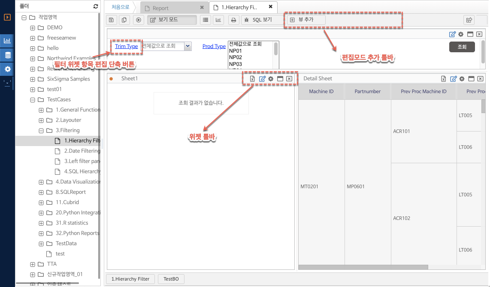

7.3. 리포트 화면 레이아웃 구성
리포트 화면의 레이아웃 구성은 다음과 같다.
리포트 조회 모드 화면
리포트 툴바의 편집모드 토글 버튼을 통해 리포트을 편집 모드 / 보기 모드로 전환 할 수 있다. 보기 모드 시 버튼의 텍스트는 편집모드, 편집 모드 시 버튼 텍스트는 보기 모드로 자동으로 변환된다.

(그림 : 리포트 보기모드 화면 레이아웃)
리포트 툴바 : 리포트 상단의 버튼을 통해 옵션 설정을 한다.
- 저장 : 리포트를 저장한다. (리포트에 대한 쓰기 권한이 있는 경우만 저장 버튼이 나타난다.)
- 다른이름으로 저장 : 리포트를 복사하여 새로운 이름의 개체로 생성한다.
- 실행 : 리포트를 조회하여 결과 시트를 조회 한다. 필터 위젯이 있는 경우 조회 버튼은 필터의 조회 버튼의 기능을 사용하여야 한다.
- 그리드 보기 : 현재 선택되어 있는 결과 시트 위젯을 그리드 보기 모드로 전환한다.
- 차트 보기 : 현재 선택되어 있는 결과 시트 위젯을 차트 보기 모드로 전환한다.
- 출력 - 클립보드 복사 : 현재 선택되어 있는 결과 시트의 그리드 결과 값을 클립보드 복사를 위한 옵션 창을 열어준다.
- SQL 보기 : 현재 선택되어 있는 결과 시트에 사용된 SQL 쿼리의 내용을 보여 준다.
- 공유하기 : 리포트만을 로드할 수 있는 웹 링크를 생성한다. 보고서를 웹페이지에 임베드 할 경우 해당 링크를 이용할 수 있다.
상태 표시바에는 현재 사용되고 있는 비즈니스 오브젝트의 정보를 보여 준다. 또한 현재 리포트의 이름이 표시된다. 결과 시트 조회 완료 후 현재 선택된 결과 시트의 행개수, 열개수 값이 상태표시바의 오른쪽에 표시된다.
리포트 편집 모드 화면 레이아웃
편집 모드 버튼을 클릭하여 리포트 편집 모드로 전환한다. 편집 모드에서는 보기 모드에 비해 다음의 레이아웃이 변경된다.
1. 리포트 툴바 추가 명령 버튼이 보여진다.
2. 필터 위젯의 편집 단축 버튼이 활성화 된다.
3. 각 위젯 툴바의 버튼이 편집 모드로 변경 된다.

(그림 : 리포트 편집 모드 화면 레이아웃)
편집 모드 리포트 툴바 추가 사항
- 뷰추가 : 위젯 목록을 보여 주며 위젯을 리포트에 추가할 수 있다.
- 차트 선택 : 현재 선택된 결과 시트 위젯이 차트 보기인 경우 차트에 대한 옵션으로 추가된다.
- 차트 마법사 : 현재 선택된 결과 시트 위젯이 차트 보기인 경우 차트에 대한 설정하는 마법사를 보여 준다.
위젯 툴바
- MS 엑셀 저장 : 현재 결과 시트를 엑셀 파일로 저장하는 기능을 제공한다.
- 피벗 : 현재 결과 시트의 피벗 편집기를 열어 피벗을 수정 확인 할 수 있다.
- 위젯 옵션 : 위젯 설정 옵션을 열어준다.
- 창 크게보기 : 현재 위젯을 리포트 전체 화면으로 확대한다.
- 닫기 : 현재 위젯을 삭제한다.
위젯의 종류 및 내용
신규 위젯을 추가하기 위해서는 리포트를 편집 모드로 전환 한 이후 툴바의 뷰 추가 버튼을 클릭하고 목록에서 추가하고자 하는 항목을 클릭한다.
결과 시트
- 그리드, 차트의 결과를 표현하기 위해 사용한다. 피벗 설정 버튼을 통해 결과 시트 피벗을 설정 한다.
필터
- 결과 시트에 적용할 필터 항목을 추가하고, 사용자가 조건에 해당하는 값을 선택한 후 결과 시트의 내용에 필터 조건으로 적용한다.